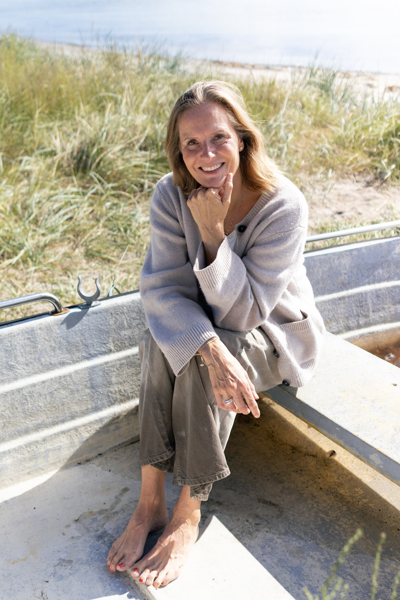
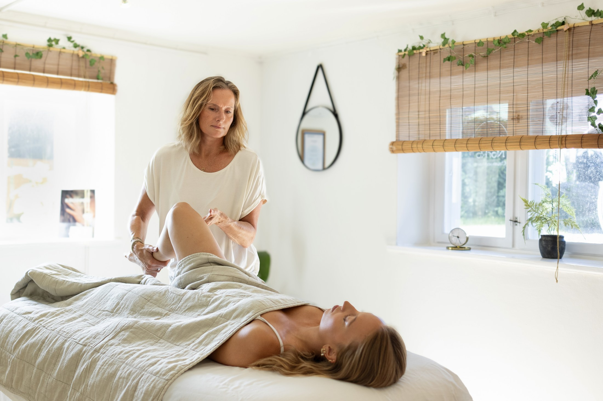
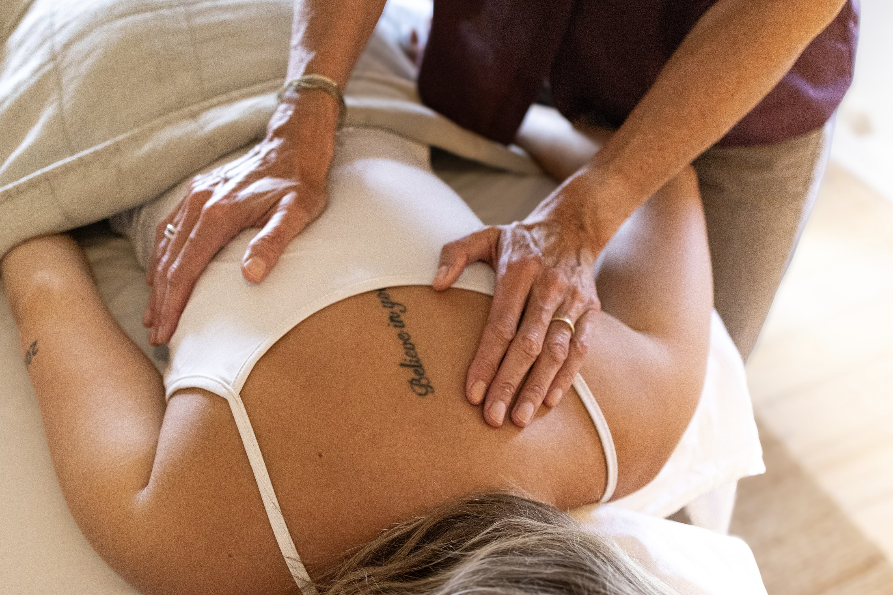
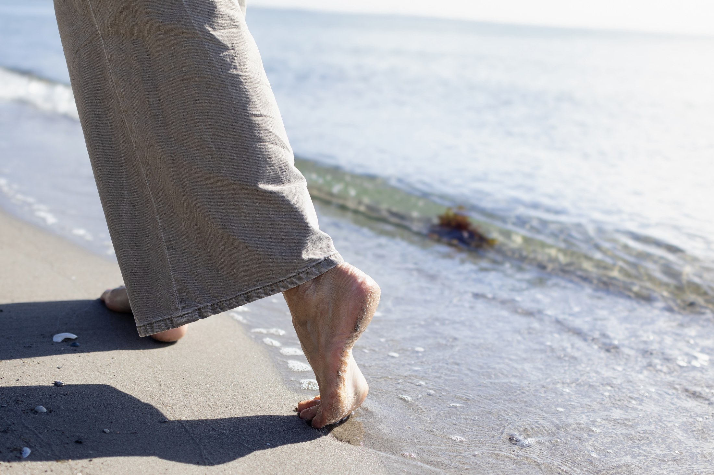
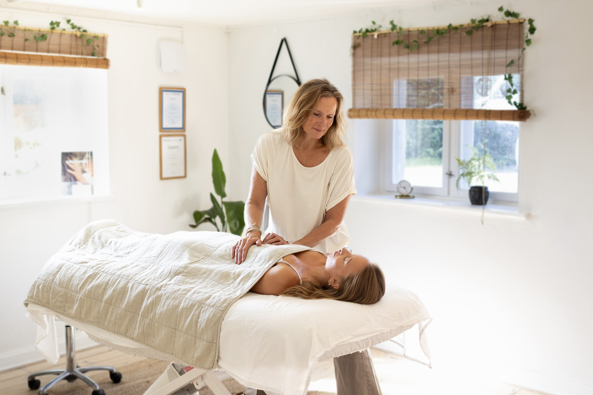
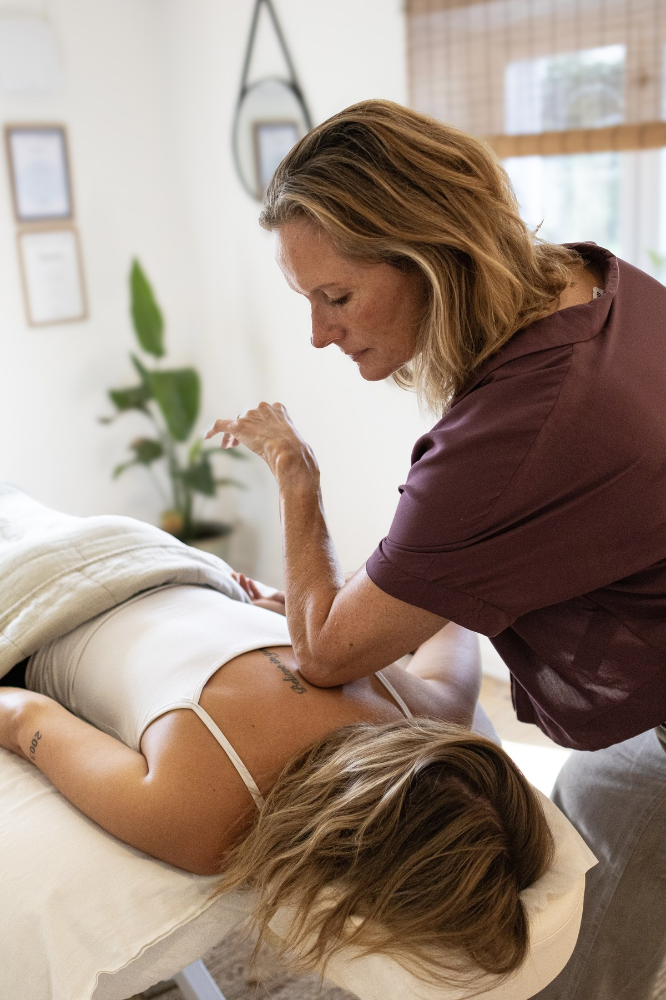
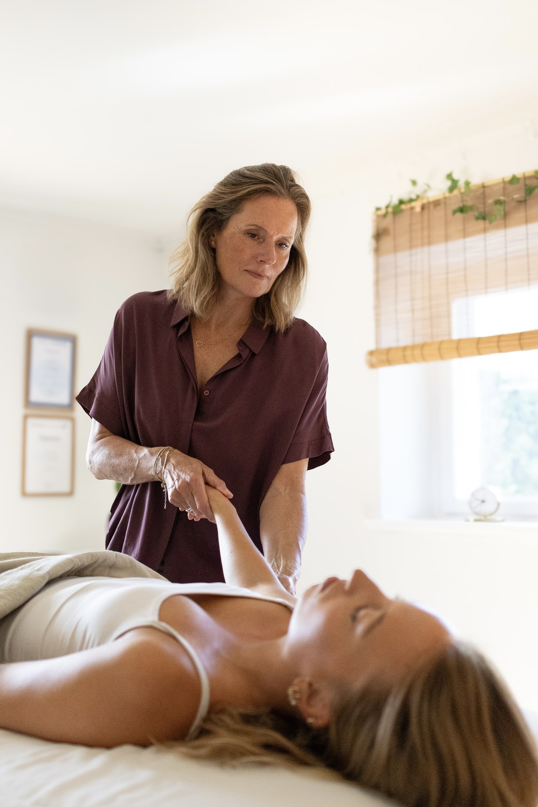
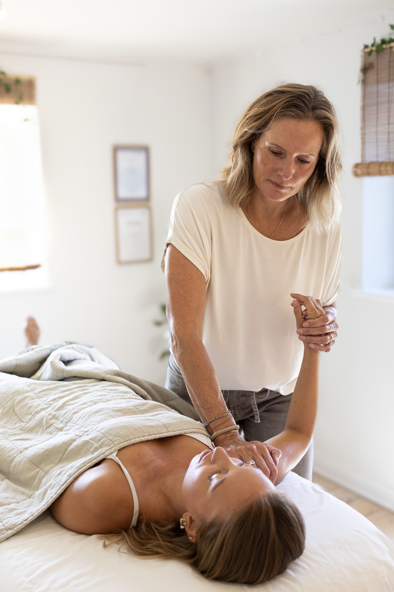
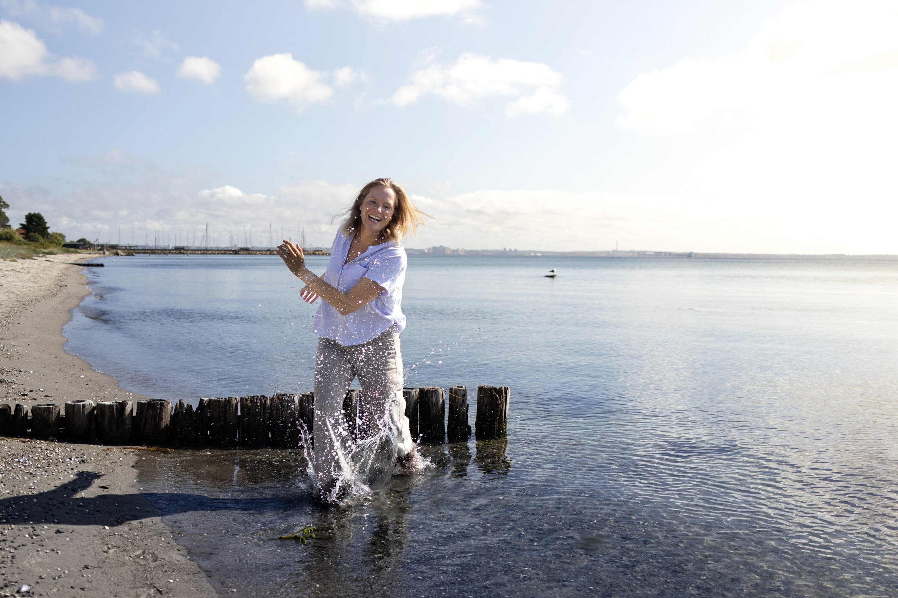
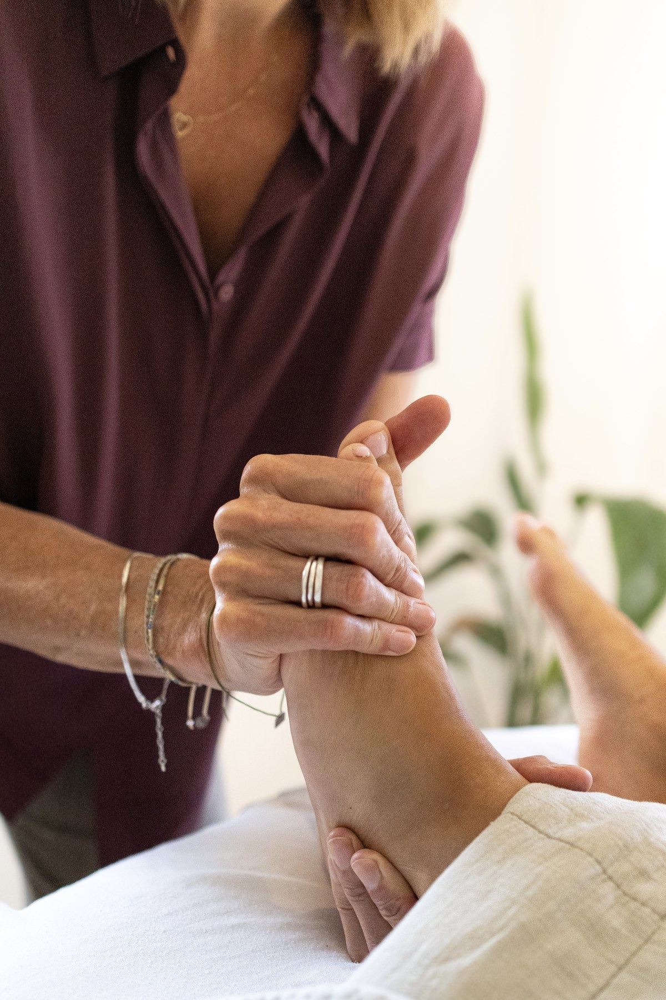

Manuvision-behandling & kropsterapi
Velkommen
Hvis du har fundet vej til min hjemmeside, kender du sikkert til: Angst, stress, despression og- eller ptsd
Du mærker måske symptomer som:
- Uro i kroppen, som du ikke helt kan forklare
- Dårlig søvn eller følelsen af ikke at være udhvilet, når du vågner
- En spændt krop, uden at du ved hvorfor
- Svært ved at mærke efter, fordi det, du mærker, ikke føles rart at møde
- En krop, der ikke føles forbindelse til, trods gode kognitive værktøjer

Om mig
Jeg hedder Mette Thaisen, jeg er 53 år og har arbejdet med Manuvision-kropsterapi i 10 år.
Jeg er optaget af at hjælpe dig til ro & balance i din krop og dit nervesystem.
Jeg er RAB-registreret og har klinik i Snekkersten ved Helsingør og på Frederiksberg.
Se adresser og book tid under " Booking Sneekersten" og "Booking i
Frederiksberg"..
Det kan jeg hjælpe dig med
Måske kender du følelsen af at være på hele tiden. Af at sige ja, når du mener nej. Af en krop, der spænder, gør ondt eller siger fra, uden at du helt ved hvorfor. Det er ikke noget, du skal tage dig sammen for at komme ud af. Det er signaler, der fortjener at blive lyttet til.
Jeg hjælper dig med at forstå kroppens signaler, så du slipper af med stress og smerter. Du bliver bedre til at forstå dine traumer og du får mere ro i kroppen, mere kontakt til dig selv og mere frihed i livet.
Jeg arbejder med og gennem kroppen, fordi det, vi har oplevet – stort som småt – ikke kun sidder i tankerne, men også i kroppen. At starte et forløb med Manuvision kropsterapi og genskabe forbindelsen mellem krop og sind er at tage dig selv alvorligt.
Kan du genkende dig selv i noget af det her?
- Jeg føler mig ofte stresset – eller er udfordret eller sygemeldt med stress, angst, depression eller PTSD
- Jeg mister let overblikket og bliver hurtigt overvældet
- Jeg har ofte søvnproblemer
- Jeg har spændinger og myoser i nakke og skuldre
- Jeg har ondt i lænden eller ryggen
- Jeg har uforklarlige smerter i kroppen
Hvis du ønsker en uforpligtende samtale pr. telefon om behanglingen, så send mig en mail:
Skriv til mig her
Et forløb hos mig
Et forløb hos mig starter altid med en kort samtale. Hvad bringer dig hertil, hvad kan du mærke i kroppen, og hvad håber du at opnå? Jeg tilpasser altid behandlingen efter dine behov, og guider dig trygt gennem hele forløbet – fra den første konsultation til efterbehandling.
Se hele forløbetMette Thaisen Kropsterapi
Klar til at starte dit forløb?
Book din første tid, så finder vi sammen ud af, hvad din krop har brug for.
Book din tid her






